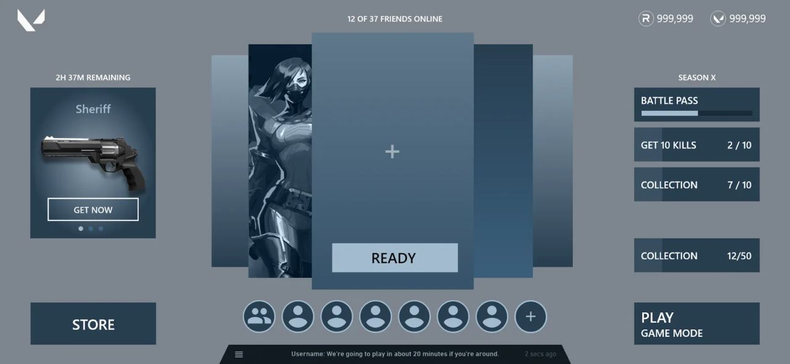
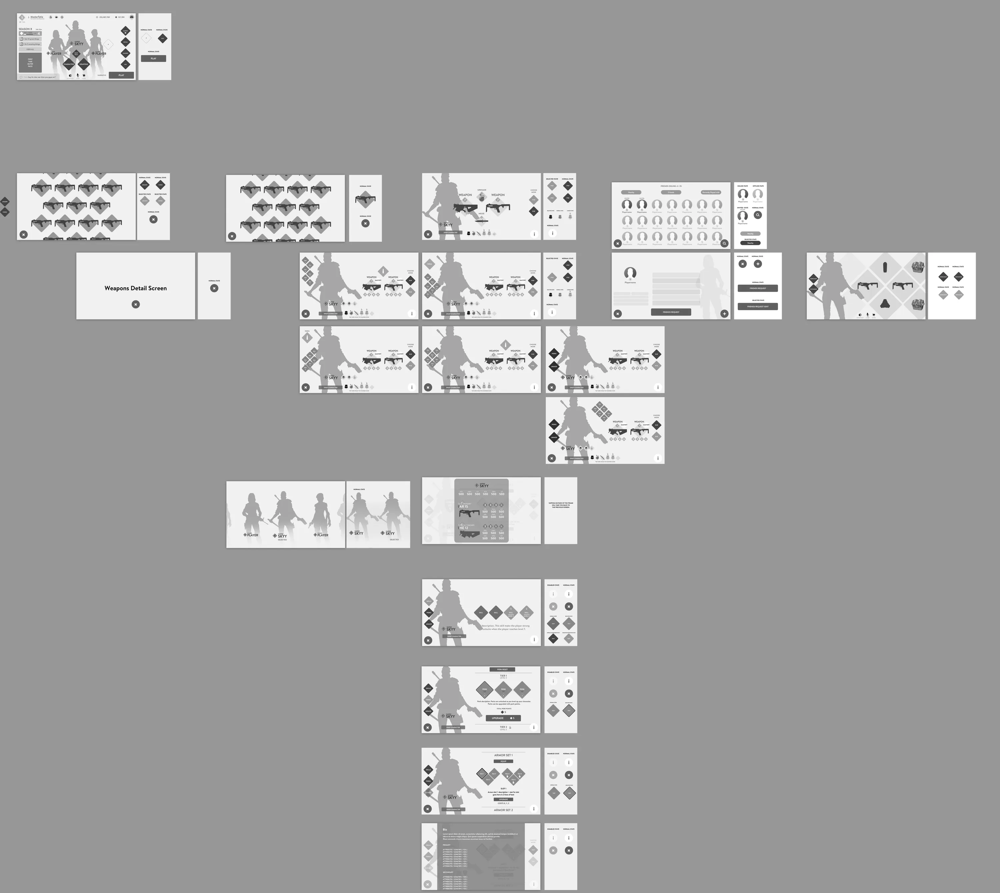
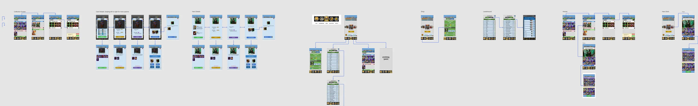
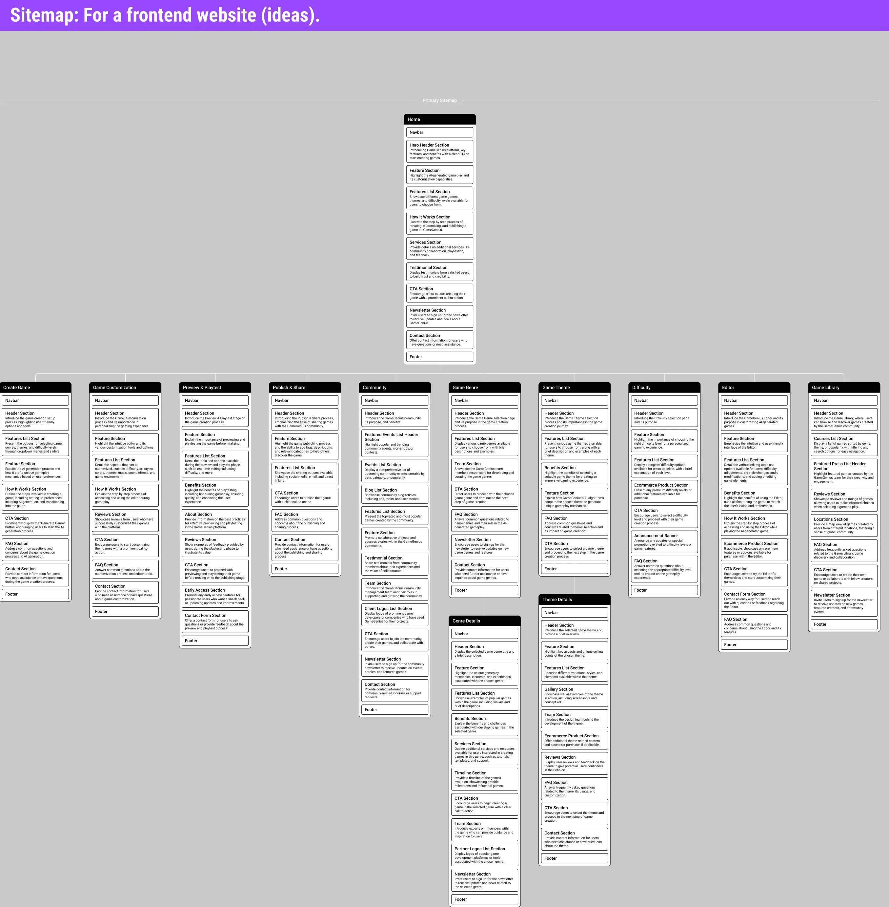
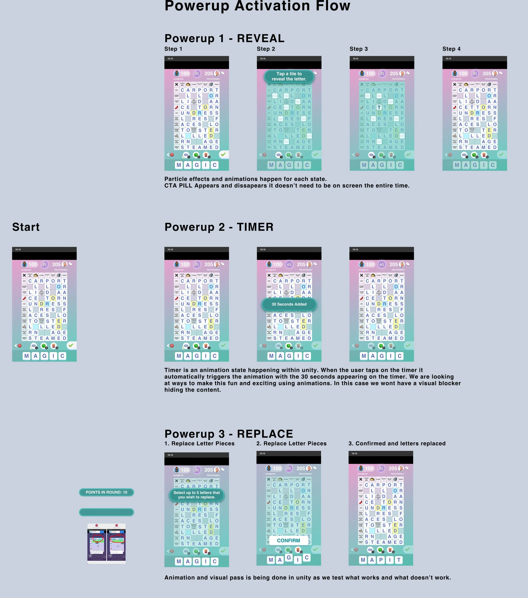

UX
01 · UX design
How it works.
Watch a lobby go from questions to a tested flow.
FigJamParty lobby / Discovery
SelectStickyShapeConnectorText
Pages
Discovery
User flows
Wireframes
Test notes
Sections
Player needs
Priorities
Party lobby · what does the player need before a match?
Who’s in my party?Player interview
Am I ready? Are they?Player interview
“I can’t find Play.”Playtest pain point
Too many currencies up topAudit
Show the next missionRetention goal
Invite a friend in one clickSocial goal
Season progress at a glanceBusiness goal
Priority 1: Ready → Play
Comments
Playtest #34 of 6 players hunted for Play.
Live dataParty invites drop 30% after a menu step.
DecisionReady and Play are the two primary actions.
FigJamParty lobby / User flows
SelectStickyShapeConnectorText
Pages
Discovery
User flows
Wireframes
Test notes
Flows
Happy path
Invite path
Recovery
Flow · launch to match
Launch
Lobby
Party
full?
full?
Ready up
Pick a mode
Matchmaking
Invite friends
Match found
Yes
No
Timeout → back to lobby, party kept
Every state has a way back.Design principle
Flow details
Steps6 screens
Decisions1
Dead ends0
NoteLosing the party on timeout was the #1 complaint. Keep it.
FigmaParty lobby / Wireframes
MoveFrameRectangleTextComment
Layers
Lobby — wireframe v3
Lobby — wireframe v3 · 1280 × 591

Design
FrameDesktop
W1280
H591
Grid12 col · 24
Status
Shapes0
Ready for reviewGreybox art placed. Hierarchy before style.
FigmaParty lobby / Wireframes
MoveFrameRectangleTextComment
Layers
Lobby — wireframe v3
Annotations
1 · Ready
2 · Party
3 · Play
4 · Missions
Lobby — wireframe v3 · 1280 × 591
1
01 · HIERARCHYOne primary action on the card: Ready.
2
02 · STATUSParty readiness without opening a menu.
3
03 · FLOWPlay sits where the eye lands last.
4
04 · MOTIVATIONMissions show progress, not lists.
Comments · 4
1RemiReady is the card’s only button.
2RemiAvatars show a ready dot.
3RemiBottom right, after missions.
4RemiBars beat “2 / 10” text alone.
ProducerApproved for UI pass. ✓
FigmaUX archive / Flows, maps and sitemaps
MoveFrameComment
Pages
Stardust Canvas · flowchart
NZM shooter · flow map
Game Genius · sitemap
TNT card battler · flow
Kryss · power-up flow
Stardust Canvas · flowchart

NZM mobile shooter · flow map

TNT card battler · flow map

Game Genius · sitemap

Kryss · power-up flow

About these files
Exported from the working files, not redrawn for the portfolio.
Projects5
Years2020–2025
UX
UX design
How it works.
User flowsInformation architectureWireframesUX audits
remiclassic.github.io/remiresume/portfolio.html#ux
A recreation of my process, sped up. The flowcharts in step 05 are my real files.